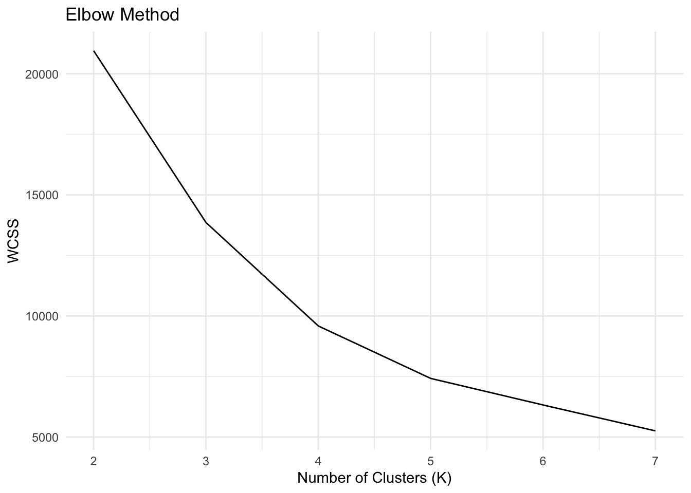
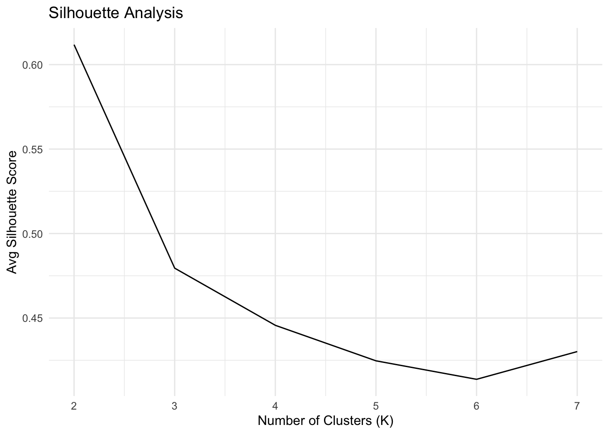
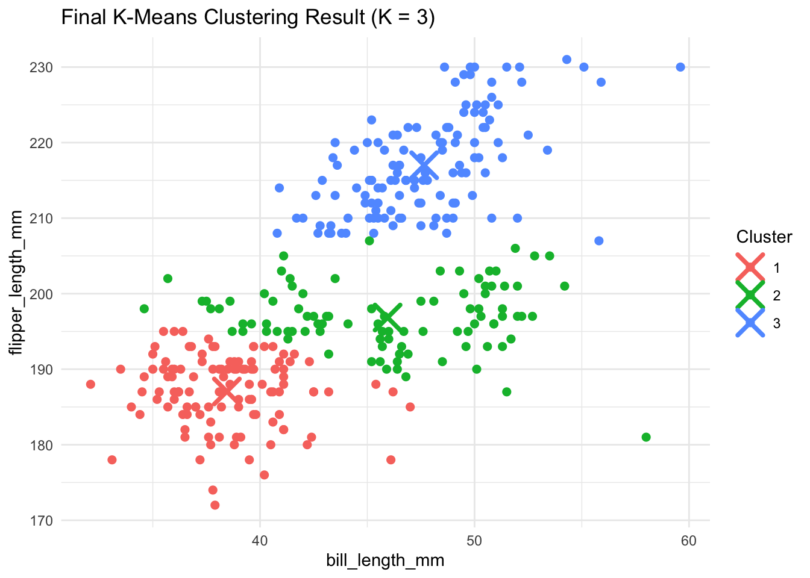
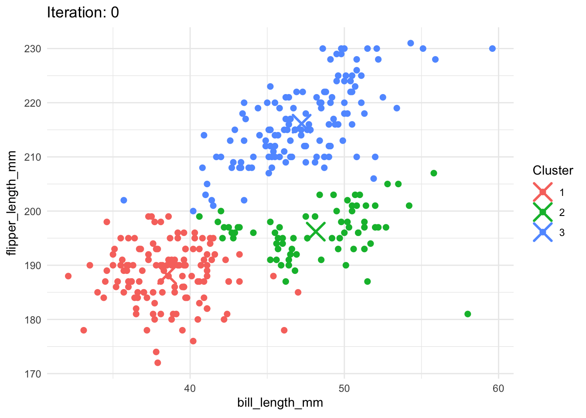

K-Means & Key Drivers Analysis
1a. K-Means
Elbow Method
The Elbow Plot shows how the total within-cluster sum of squares (WCSS) changes as we increase the number of clusters (K). A lower WCSS means that the points within each cluster are closer to the center. As we increase K, WCSS continues to drop, but the improvement slows down. In this case, the ‘elbow’ appears at K = 3, suggesting that using 3 clusters balances simplicity and accuracy well.
Silhouette Score
The Silhouette Score tells us how well-separated the clusters are. Higher scores (closer to 1) mean better-defined clusters. Our silhouette plot shows a peak at K = 3, indicating that this number of clusters gives the clearest groupings. Scores above 0.5 suggest that the clustering is meaningful.

Custom vs. Built-in K-Means
We wrote our own implementation of the K-means algorithm and compared it with R’s built-in kmeans() function. The two methods produced nearly identical results. Visually, the groupings of data points were consistent between both methods. This confirms our implementation works correctly. Here is are the three clusters plotted.

Animated Clustering Visualization
Below, is an animated version of the plot to show how the custom algorithm works step-by-step. The animation illustrates how centroids move and how points change cluster assignments until the groups stabilize. This helps demystify how K-means “learns” over time.

Conlusion
Both the Elbow and Silhouette methods agree that K = 3 is the best number of clusters. Our custom implementation works as expected, and the animation gives a clear visual of how the algorithm iteratively finds clusters.
2b. Key Drivers Analysis
We analyzed what drives satisfaction using various statistical techniques. The table below shows different importance measures for each variable, all scaled to percentages that sum to 100% within each column.
| Key Driver Metrics Summary | ||||||
|---|---|---|---|---|---|---|
| Feature Percentages | ||||||
| Variable | Pearson | Std_Reg_Coef | Usefulness | Shapley | Johnson_RW | Gini |
| trust | 13.3% | 25.3% | 31.5% | 19.8% | 19.8% | 18.7% |
| build | 10.0% | 4.4% | 1.0% | 6.6% | 6.6% | 7.6% |
| differs | 9.6% | 6.1% | 2.1% | 6.7% | 7.0% | 7.2% |
| easy | 11.1% | 4.8% | 1.1% | 8.5% | 8.2% | 9.0% |
| appealing | 10.8% | 7.4% | 2.7% | 8.4% | 8.3% | 9.6% |
| rewarding | 10.1% | 1.1% | 0.1% | 6.3% | 6.0% | 7.7% |
| popular | 8.9% | 3.6% | 0.8% | 5.2% | 5.4% | 7.0% |
| service | 13.0% | 19.3% | 17.9% | 16.9% | 16.6% | 16.3% |
| impact | 13.2% | 28.0% | 42.8% | 21.6% | 22.0% | 17.1% |
Metric Methods
Pearson: Measures how strongly each variable is related to satisfaction.
Std_Reg_Coef: The impact each variable has on satisfaction in a regression model.
Usefulness: How much predictive power is lost when a variable is removed.
Shapley: Fairly distributes predictive credit among variables, accounting for overlap.
Johnson_RW: A more accurate version of regression weights that considers correlation.
Gini: Comes from a random forest model; shows how much each variable helps in splitting the data.
Key Variables
Impact and Trust consistently show up as top drivers across all methods.
Service is also highly important, especially in the Shapley and Johnson methods.
Variables like Rewarding and Popular are less influential, appearing with lower percentages.
Conclusion
There is broad agreement across metrics about which variables matter most. This helps build confidence in focusing improvement efforts on a few key areas like Impact, Trust, and Service.